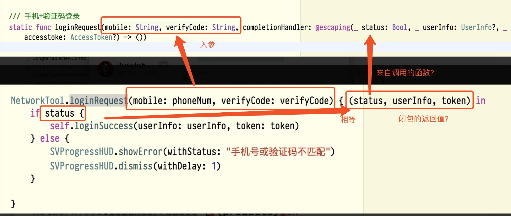
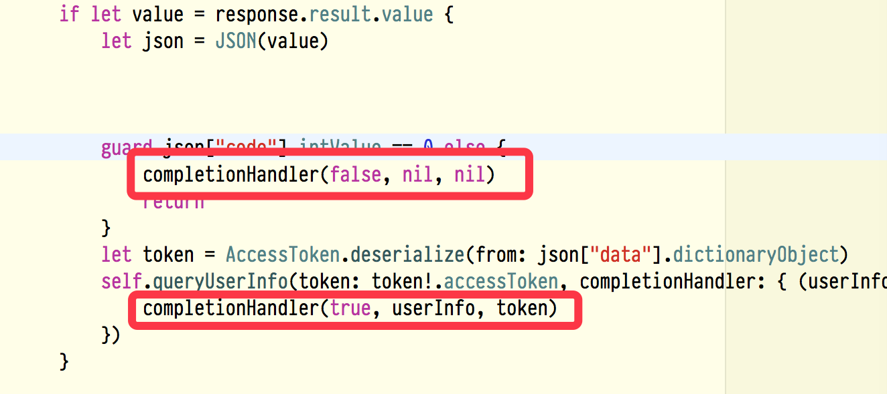

05.闭包使用
闭包 closure 闭包在Swift中应用广泛，在许多系统库方法中都能看到。 无名 本质是函数 使用时注意循环引用
下一级创建闭包
// 1.定义一个闭包类型
typealias swiftBlock = (_ btnTag : Int) -> Void
// 2. 声明一个变量
var callBack: swiftBlock?
// 3. 定义一个方法,方法的参数为和swiftBlock类型一致的闭包,并赋值给callBack
func callBackBlock(block: @escaping swiftBlock) {
callBack = block
}
//4. 调用闭包,设置你想传递的参数,调用前先判定一下,是否已实现
if callBack != nil {
callBack!(88)
}
闭包回调
//闭包
cell.callBackBlock { (tag) in
print(tag)
}
闭包基础
//闭包是无名的，因为他们能够从上下文中捕获变量、常量，从而应用在自身的作用区域。
//声明
var myClosure: () -> String
//注意 () -> String 实际上是一个无名函数，作为闭包变量的类型。
//无返回值的闭包
myClosure:() -> Void = { print("Hello world") }
//执行闭包 myClosure()
// Hello world
//尝试一个带参的闭包
var mySecondClosure: (Int , Int ) -> Int = { (a: Int , b: Int) -> Int in return a * b }
//第一次简化 类型自动推导 可以根据参数推断
mySecondClosure = { (a, b) in return a * b }
//第二次简化 如果函数体只包含一句 return 代码，可省略
return mySecondClosure = { (a, b) in a * b }
/*
第三次简化
被捕获的参数列表中，含有a、b，下标从0开始，可通过"$"获取。
编译器亦可通过，捕获列表自行推断出参数。
故可省略参数列表 （a, b）和 关键字 in
*/
mySecondClosure = {
$0 * $1
}
闭包作为函数参数
/*
operation: 是一个闭包类型的参数
该闭包有两个参数（Int, Int） ,并有一个Int型返回值
要整体看待，不要蒙圈。
*/
func myOpreation(_ a: Int , _ b: Int, operation: (Int , Int) -> Int) -> Int {
let res = operation(a, b)
return res
}
//实现一个闭包
let multipyClosure:(Int, Int) -> Int = {
$0 * $1
}
//等同于
let multipyClosure = {
(a: Int, b: Int) in
a * b
}
//下面，我们将闭包作为参数传递
myOperation(4, 2, operation:multipyClosure)
//展开 inline
myOperation(4, 2, operation: {
(a: Int, b: Int) -> Int in
return a * b
})
/*
事实上，我们并没有必要在本地定义一个闭包常量或变量，再作为参数传递。
可以简单的在调用的地方进行声明并简化
*/
myOperation(4, 2, operation:{
$0 * $1
})
//进一步简化，* 操作符是一个有两个参数并返回一个结果的函数。可做如下简化:
myOperation(4, 2, operation: *)
/*
如果闭包是作为函数的最后一个参数，可以将闭包后置到函数体外部。
*/
myOperation(4, 2) {
$0 * $1
}
捕获
闭包可以从上下文环境中捕获常量、变量，并在自己的作用域内使用。
//eg.: 1
var counter = 0
let incrementCounter = {
counter += 1
}
/*
由于闭包定义和变量counter在同一作用域中，
故闭包可以捕获并访问变量counter。
对变量counter做的任何改变，对闭包来说都是透明可见的。
*/
incrementCounter() //1
incrementCounter() //2
//eg.: 2
func countingClosure() -> () -> Int {
var counter = 0
let incrementCounter: () -> Int = {
counter += 1
return counter
}
return incrementCounter
}
/*
该例子中，闭包捕获了封闭空间（函数实体内）的内部变量counter。
*/
let counter1 = countingClosure()
let counter2 = countingClosure()
counter1() // 1
counter2() // 1
counter1() // 2
counter1() // 3
counter2() // 2
应用闭包在集合中 排序
/* 数组提供了一个排序函数，sorted().使用的是默认规则，当然我们也可以定制排序规则。 */
let names = ["ZZZZZZ", "BB", "A", "CCCC", "EEEEE"] names.sorted()
// ["A", "BB", "CCCC", "EEEEE", "ZZZZZZ"] //更改排序规则 其实就是利用了函数重载，具体可看函数定义
//sorted(by: <#T##(String, String) throws -> Bool#>)
names.sorted { $0.count > $1.count } // ["ZZZZZZ", "EEEEE", "CCCC", "BB", "A"]
遍历 集合提供了很多遍历的函数用来对元素进行访问及操作，并大量应用了闭包。 重点需要了解的函数有: forEach、filter、map、reduce forEach
/*
循环遍历集合中的元素，相当于for-in 快速遍历
*/
let values = [5, 3, 2, 3,1]
values.forEach {
print("element is \($0)")
}
filter
/*
函数原型:
func filter(_ isIncluded: (Element) -> Bool) -> [Element]
按照规则过滤原数组
*/
var values = [1.5, 10, 4.88, 3.2, 8]
let res = values.filter {
return $0 > 4
}
//res是移除掉小于或等于4的元素的新数组
map
/*
函数原型：
students.map(<#T##transform: (String) throws -> T##(String) throws -> T#>)
数组映射
*/
let input = ["0", "12", "name", "hi", "3"]
let number = input.map {
Int($0) //将元素转换为Int型
}
//注意类型转换可能失败，所以返回的是可选型
//[Optional(0), Optional(12), nil, nil, Optional(3)]
/*
另外一个高度近似的函数
flatMap
隐含了两种操作
1.解包
2.展开并合并
*/
let flatNumber = input.flatMap() {
Int($0)
}
//[0, 12, 3]
reduce
/* 函数原型 reduce(<#T##initialResult: Result##Result#>, <#T##nextPartialResult: (Result, String) throws -> Result##(Result, String) throws -> Result#>) */
//数组
let flatNumber = [0, 12, 3] let sum = flatNumber.reduce(0) { return $0 + $1 }
//15
//字典
let stock = [1.5: 5, 10: 2, 4.99: 20, 2.30: 5, 8.19: 30]
let stockSum = stock.reduce(0) { return $0 + $1.key * Double($1.value) }
//384.5
/* 另一个reduce重载函数 注意inout 关键字，所以想想你可以怎么应用？ */
input.reduce(into: <#T##Result#>) {
(<#inout Result#>, <#String#>) in <#code#>
}
 